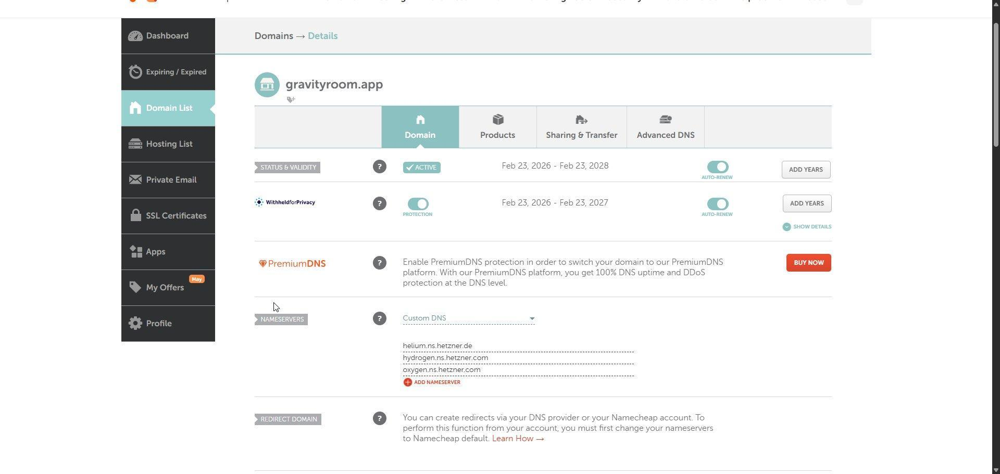
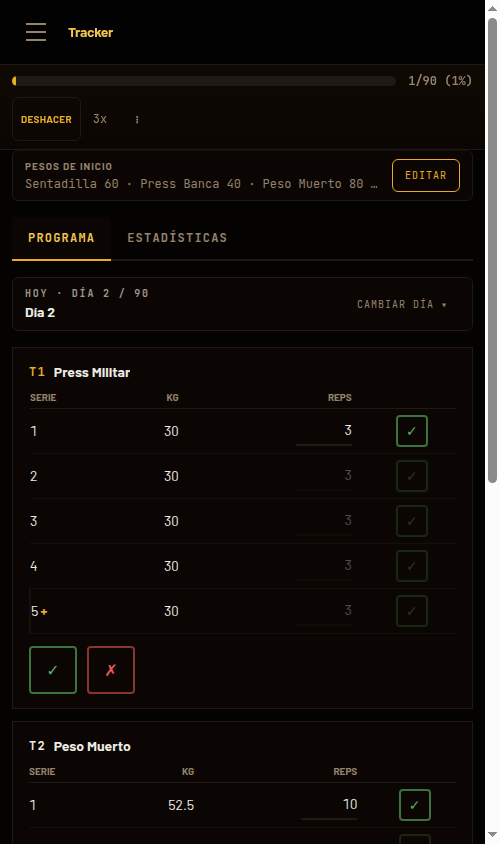

Programas probados de fuerza e hipertrofia
con progresión automática
Luis Reche · Tutor: Pascual Barrer · 27/05/2026
Seguir un programa de fuerza con progresión a mano es un caos:
Gravity Room automatiza la progresión de forma determinista.
Según cumplas o no el objetivo del día, la app ajusta sola la siguiente sesión —subir, repetir o bajar— con la misma regla siempre y sin cálculos a mano.
La pieza central es el paquete de dominio: una sola fuente de verdad para la web y la API. A partir de aquí, subimos de abajo arriba.
En producción, no en local 🚀
www (301 → ápex) y
api

POST /api/auth/google
GET /api/catalog/
GET /api/programs/
POST /api/programs/{id}/results
POST /api/programs/{id}/undo❌ Lo fácil: copiar las reglas en el cliente y en el servidor → se desincronizan y aparecen bugs.
✅ Mi decisión: un paquete compartido con TypeScript + Zod que además valida los datos con el mismo esquema en cliente y servidor.
// packages/domain
// (web y API)
export const WorkoutResult =
z.enum(['completed', 'failed'])
// Reglas del método: aquí,
// no en cada cliente
export function nextSession(
prev: SessionState
): SessionState {
/* reglas del programa */
}
Uso la IA como copiloto, pero las reglas las pongo yo: un
CLAUDE.md en el repo fija convenciones, estilo y TDD.
Dominio, API y web comparten tipos: un contrato que verifica la máquina. Si la IA desincroniza capas, no compila.
Prohíbe any, as, @ts-ignore y !:
la IA no puede tapar un error, debe arreglar la causa.
Primero el test que falla, luego el código mínimo: fija el comportamiento antes que la solución.
Tipos + lint son revisores automáticos en cada commit y en CI: la IA pasa por el mismo listón que yo.
Disponible en https://gravityroom.app
¿Preguntas?